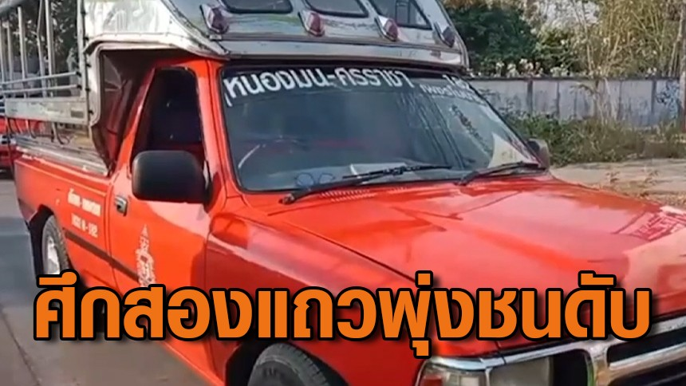
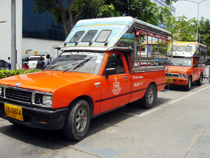
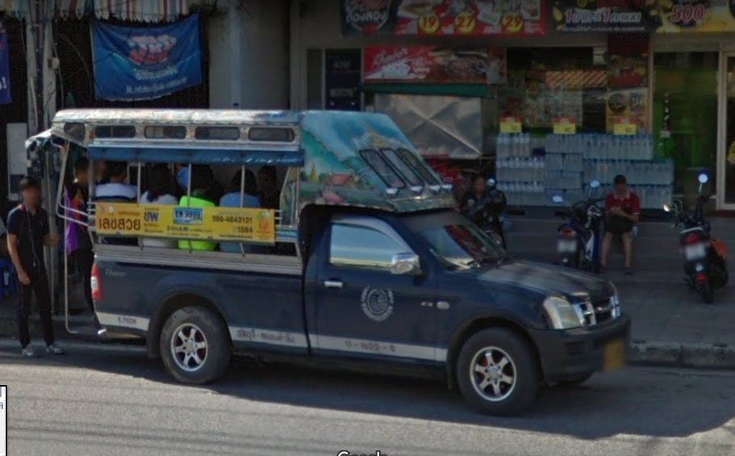
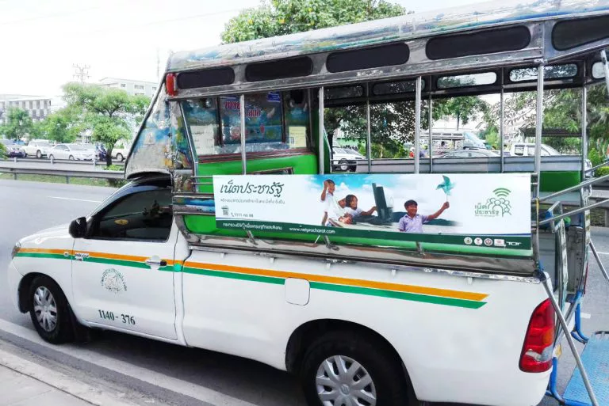
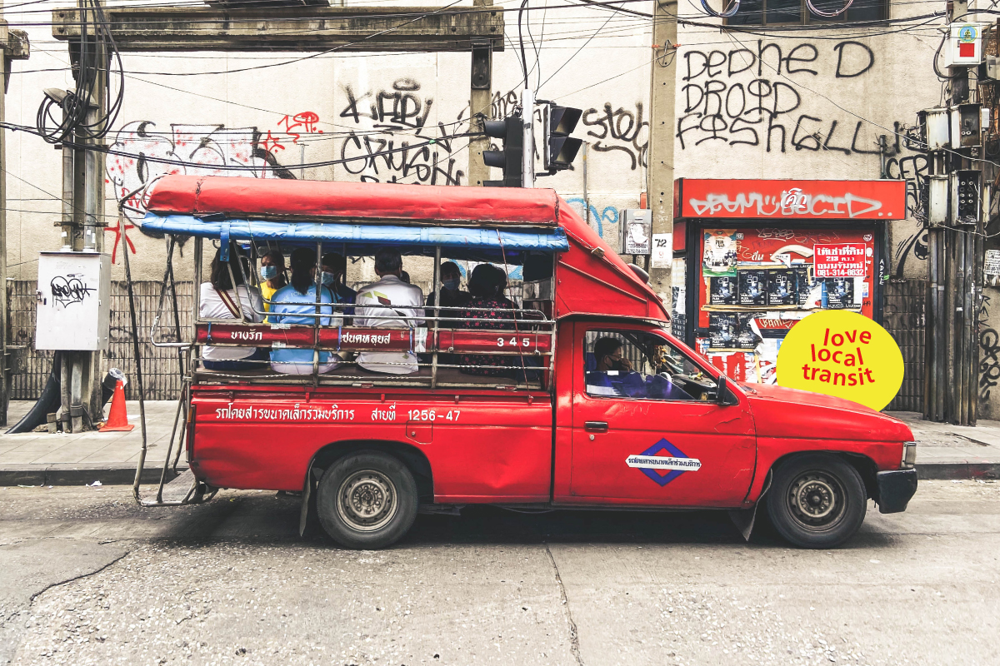
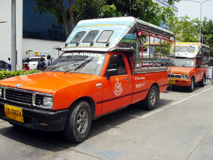
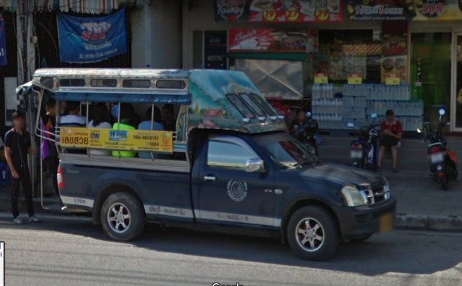
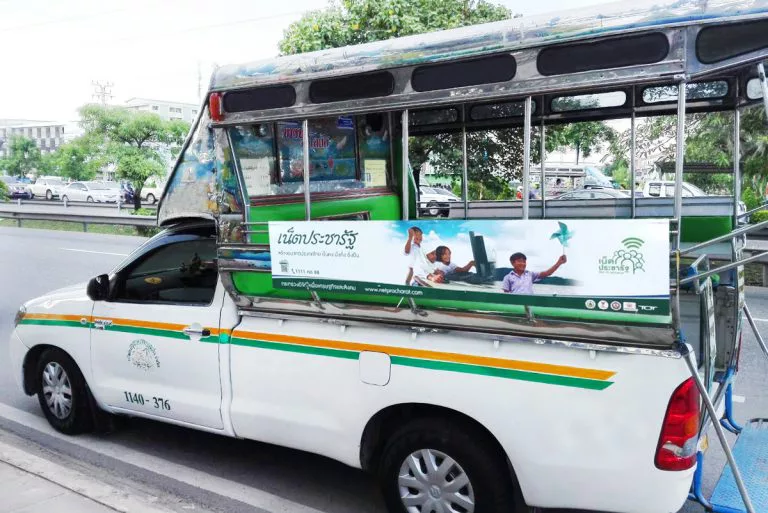

Song-Thaew




Song Thaew news :>(Image Credit)
Song Thaew can be translated to English as “Two rows”.Basically Song Thaews are small pick up trucks which consist of two rows of seats facing each other at the back of it,with small leg room in the middle.And in the back there is also a limited space with hangars in case if the truck is full,you can stand and hold the hangars.
The drivers of Song Thaews drive really slow it rather safe.And they also got travel routine for each province.
For example in Chonburi
Red cars : from Chalerm Thai to Bangsean(in)

Orange cars : from Sriracha to Nongmon

Blue cars : from Chalerm Thai to Bangsean(out)

White cars : from Chonburi to Nongmon